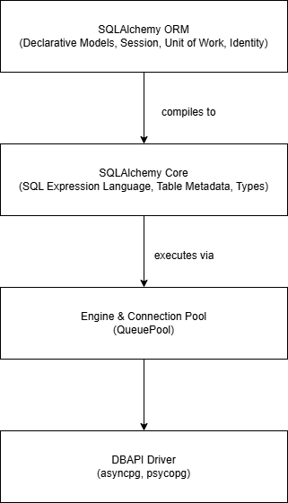

SQLAlchemy
Schema and Model
- A "database schema" literally means
CREATE TABLEstatements and column definitions. - The naming flips in Python ORMs because of two different perspectives: the database's perspective vs. the application boundary's perspective.
- However, Python doesn't care what the files are named.
- Many teams use alternatives that remove the ambiguity:
tables.pyorentities.py(for SQLAlchemy ORM classes)dto.py(Data Transfer Objects) orvalidators.py(for input/output classes)
- Using
models.pyandschemas.pyis simply the dominant Python convention so other Python developers immediately know where to look.
Why database tables are called Models
- In object-oriented software architecture (like MVC or ORM), a Model represents the core domain entities and how they map to persistent storage.
- We are modeling real-world concepts (
Book,Author,Genre) as Python classes that SQLAlchemy translates into database tables. - Each ORM class holds stateful database behavior: primary keys, foreign key relationships, cascades, and session tracking.
Why input/output shapes are called Schemas
- In modern Python ecosystems (especially popularized by Pydantic, Marshmallow, and FastAPI), a Schema means a validation and serialization contract (e.g. a JSON Schema).
- It defines the exact shape of data entering or leaving the application (e.g.,
BookCreaterequiresauthor_name: str, whereas theBookdatabase table actually storesauthor_id: int). - It has zero connection to the database engine. It just checks: "Does this incoming user input match the rules before we touch the database?"
Why keep them separate at all
- Because what the user sends is rarely identical to what the database stores.
- If we try to use a SQLAlchemy
Bookmodel directly to capture user input, we would run into two problems:- Validation happens too late: Errors only surface when
session.commit()crashes against database constraints. - State coupling: Instantiating an ORM model outside a session or passing raw strings into a relationship expecting Genre objects raises type and ORM state errors.
- Validation happens too late: Errors only surface when
| Aspect | Database Model (Book) |
Input Schema (BookCreate) |
Update Schema (BookUpdate) |
|---|---|---|---|
id & created_at |
Required (auto-generated by DB) | Omitted (user shouldn't supply) | Omitted |
| Author | author_id: int (foreign key) |
author_name: str (human input) |
author_name: str \| None |
| Required fields | Strictly enforced (nullable=False) |
Required on creation | All optional |
Core vs. ORM
- SQLAlchemy separates database communication into two distinct layers: Core and ORM.
- The ORM is built directly on top of Core rather than existing as an independent engine.

The Engine and Connection Pooling
- The
Engineis the global entry point to the database. - Creating an engine does not immediately establish a network connection.
- Instead, it configures a dialect (e.g., PostgreSQL, SQLite) and initializes a Connection Pool (typically
QueuePool). - Opening and closing TCP/TLS handshakes per query is expensive.
- When application code requests a connection, the pool lends an active connection and intercepts
.close()calls to return the connection cleanly to the pool rather than terminating the socket.
Core Transactions vs. ORM Session
- At the Core level, code interacts directly with
Connectionobjects and explicit transaction blocks. - At the ORM level, persistence is managed through a
Session. - The
Sessionimplements two critical architectural patterns:- Identity Map
- Ensures that within a single session, a given database row (identified by primary key) maps to one and only one Python object instance in memory.
- Querying the same primary key twice returns the exact same Python object reference (
obj1 is obj2).
- Unit of Work
- Tracks all attribute mutations, object additions (
session.add()), and deletions (session.delete()) in memory. - Instead of issuing an
UPDATEstatement every time a Python attribute changes, the session batches changes and emits optimized SQL statements in dependency order during a flush.
- Tracks all attribute mutations, object additions (
- Identity Map
- Flush vs. Commit
- A
flushsends pending SQLINSERT/UPDATE/DELETEstatements to the database transaction buffer so primary keys and constraints are evaluated, without finalizing the transaction. - A
commitflushes any remaining changes and permanently persists the transaction to disk.
- A
Declarative Modeling
- SQLAlchemy 2.0 replaced legacy untyped
Column(...)declarations with PEP 484-compliantMapped[...]annotations andmapped_column(). - Static type checkers (
mypy,pyright) can verify model attribute types directly without external plugins. - Every ORM model inherits from a shared subclass of
DeclarativeBase, which maintains a centralMetaDataregistry of all tables. - Key Modeling Distinctions
- Nullability Inference
Mapped[str]automatically configuresnullable=Falseon the database column.Mapped[str | None]automatically configuresnullable=True.
defaultvs.server_default:default=...executes in Python when the ORM generates anINSERTstatement.server_default=...embeds aDEFAULTclause directly into the SQLCREATE TABLEDDL, ensuring non-ORM SQL inserts also receive the default value.- Recommended Practice: Define both (
default=...andserver_default=...) for critical invariants like timestamps (func.now()), booleans, or status flags, or standardize onserver_defaultpaired with SQLAlchemy 2.0's automaticRETURNINGsupport (enabled by default on PostgreSQL, SQLite 3.35+, and MariaDB) so the DB remains the single source of truth while Python immediately receives the generated value in the same round-trip.
- Nullability Inference
Relationship Modeling
- Relational schemas link tables via foreign keys, while object models traverse references via attributes.
- SQLAlchemy bridges these through
ForeignKey(database-level constraint) andrelationship()(ORM-level object navigation). back_populates- Modern Standard- Requires explicitly declaring
relationship()on both classes, pointing each to the other's attribute name. - Both attributes remain visible in source code, enabling IDE autocompletion and static type verification.
- Requires explicitly declaring
backref- Legacy- Declared on only one model and dynamically injects a hidden attribute onto the target model at runtime.
- Static type checkers cannot see dynamically injected attributes, causing false-positive errors.
-
How
back_populatesWorks- In the database, only the child table stores the foreign key column (i.e.
department_id). - The parent table (
departments) has no physical column pointing toemployees. back_populatesdoes not alter the database schema.- It is purely an in-memory Python state synchronization mechanism between two ORM
relationship()descriptors before a flush occurs. - In the example below, without
back_populates, appendingalicetoeng.employeeswould leavealice.departmentasNonein Python memory until the session is flushed and refreshed from the database.
- In the database, only the child table stores the foreign key column (i.e.
One-to-Many and Bidirectional Linking
One-to-One Relationships
In SQLAlchemy 2.0, a One-to-One relationship is defined identically to One-to-Many, except the collection type annotation on the parent side is singular (Mapped["Profile | None"]) rather than a list[...], paired with a unique=True constraint on the foreign key.
Many-to-Many Relationships
Many-to-Many links require an intermediate association table holding foreign keys to both entities.
Cascade Behaviors (all, delete-orphan)
- ORM cascades dictate how session operations (
add,delete,merge) propagate from a parent object to its associated child objects in memory. save-updateandmerge(included inall): Adding a parent to a session automatically adds newly attached child objects.delete(included inall): Callingsession.delete(parent)marks all loaded children for deletion rather than setting their foreign keys toNULL.delete-orphan: If a child object is removed from a parent's collection (dept.employees.remove(emp)) or reassigned toNone, SQLAlchemy automatically deletes the orphaned child row from the database upon flush rather than leaving it unattached.- ORM
cascade="all, delete-orphan"governs how objects currently loaded in Python memory behave.- For example, if we execute
parent.children.remove(child)in Python, SQLON DELETE CASCADEwill not delete that child because the parent wasn't deleted, onlydelete-orphaninstructs SQLAlchemy to emit aDELETE FROM children WHERE id = ...statement. - Conversely, if
session.delete(parent)is called withoutondelete="CASCADE"in the DB, SQLAlchemy must firstSELECTall children into Python memory just to delete them one by one.
- For example, if we execute
- SQL
ForeignKey(..., ondelete="CASCADE", onupdate="CASCADE")is enforced natively by the RDBMS.- If a parent row is deleted via raw SQL or a bulk
delete(Parent).where(...)statement, the database deletes child rows directly without ORM intervention.
- If a parent row is deleted via raw SQL or a bulk
- Production Standard
- Configure both (
ondelete="CASCADE"on theForeignKeyandpassive_deletes=Trueandcascade="all, delete-orphan"on therelationship()) so the ORM delegates bulk parent deletion to the database engine while still handling in-memory orphan removal cleanly.
- Configure both (
Querying & Eager Loading
Constructing Queries with select(), where(), and join()
.scalars().all()returns alist[Employee]when selecting a single entity..all()(without.scalars()) returns alist[Row]of named tuples. Used when selecting multiple columns or mixed entities (e.g.,select(Employee.full_name, Department.name))..scalar_one_or_none()returns a single object orNone, raisingMultipleResultsFoundif more than one row matches.
Selecting Specific Columns or Multi-Table Joins
- When querying specific columns rather than full ORM entities, SQLAlchemy returns
Rowobjects (named-tuple-like structures) instead of model instances. - When selecting exactly one column from one table,
.scalars()unwraps the single-element tuples into a flat Python list. - When selecting multiple columns,
.scalars()cannot be used because it only extracts the first column of each row. Instead, use.all()forRowtuples or.mappings().all()for dictionary-like rows. - To keep query results typed without returning full ORM models, unpack rows directly into lightweight schemas.
- SQLAlchemy allows querying the exact same ORM model class while instructing the SQL generator to fetch only specific columns using
load_only().- While
load_only()avoids creating separate projection classes, it carries a major operational hazard. - Unloaded attributes remain deferred. If code later accesses a property which was excluded from
load_only, SQLAlchemy will either silently emit an extraSELECTquery per object (triggering an \(N+1\) query) or raiseDetachedInstanceErrorif the session has already closed. - To catch accidental access immediately during testing, pair
load_only()withraiseload("*"). - Python Teams Still Prefer Lightweight Projection Classes (
NamedTuple/TypedDict).
- While
The \(N+1\) Query Problem
- By default, SQLAlchemy relationships use lazy loading (
lazy="select"). - Child collections are not fetched during the initial parent query.
- Instead, SQLAlchemy emits a separate
SELECTquery the first time the relationship attribute is accessed. - In asynchronous SQLAlchemy (
AsyncSession), lazy loading is strictly prohibited and raisesMissingGreenletbecause implicit network I/O cannot occur inside standard attribute access.
Eager Loading Strategies
- Eager loading instructs SQLAlchemy to fetch related records upfront in a bounded number of queries using
.options(...). selectinload()- Best for One-to-Many and Many-to-Many collections.
- Executes a second query using an
INclause containing the primary keys retrieved in the first query. - Avoids Cartesian product row duplication while executing a predictable total of 2 queries.
joinedload()- Best for Many-to-One and One-to-One scalar references.
- Emits a single SQL
LEFT OUTER JOINto fetch both parent and child in one round-trip. - When using this on a collection (
One-to-Many), duplicate parent rows are returned by SQL, requiring.unique()before calling.scalars().all(). - Calling
session.scalars(stmt).all()without.unique()raisesInvalidRequestError: The unique() method must be invoked on this Result. - Calling
.join(Employee.department)modifies the SQLWHERE/ONclause for filtering or sorting, but does not populateemployee.departmentin memory. - Accessing
employee.departmentafterward still triggers a lazy load unlessjoinedload()orcontains_eager()is also supplied.
subqueryload()- Legacy / Composite Primary Keys.
- Re-runs the original parent query wrapped as a derived subquery (
JOIN (SELECT id FROM departments ...)). - Generally superseded by
selectinload(), except when dealing with complex composite foreign keys whereINtuples are unsupported by the database dialect.